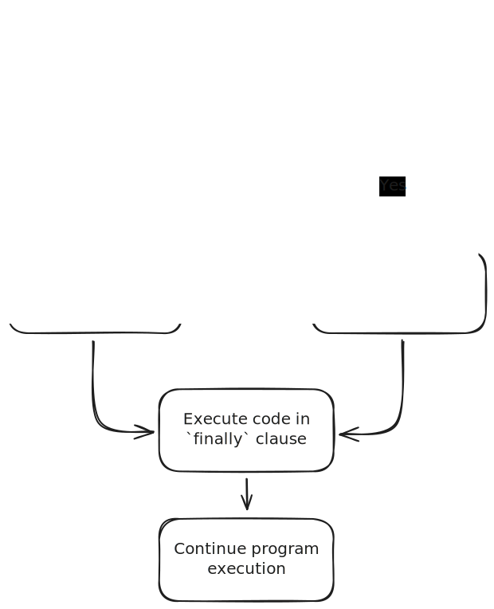
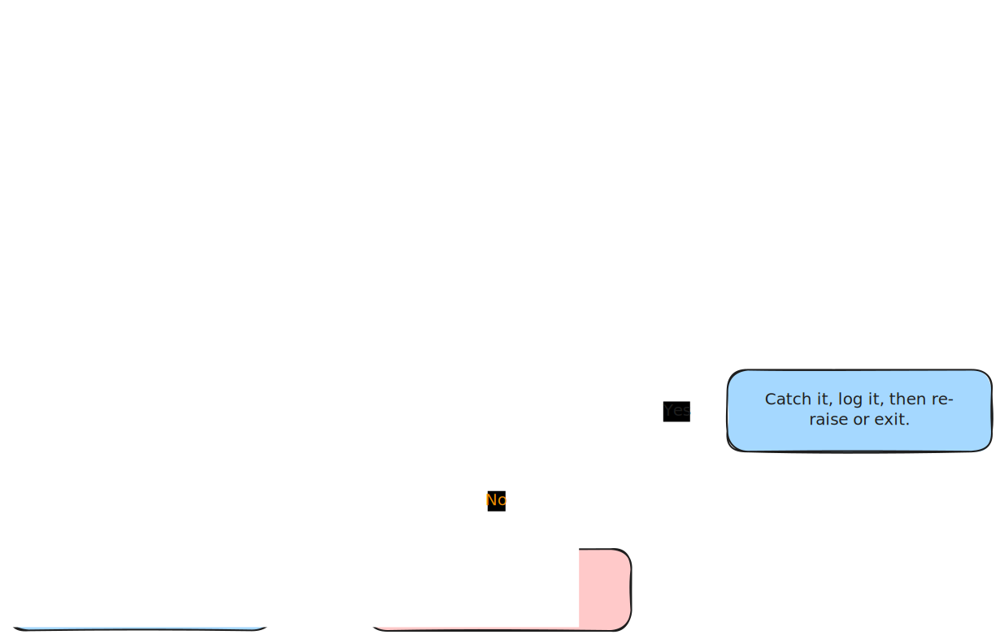

try:
47 + "102"
except TypeError as error:
print(f"an type error occurred: {error=}")an type error occurred: error=TypeError("unsupported operand type(s) for +: 'int' and 'str'")Errors and unexpected situations happen in nearly all programs, even simple ones. It’s important to understand that errors are a normal part of programming, and there are good techniques to help us write code that can handle common errors effectively.
This chapter explores errors and exceptions and how to manage them in your Python code. We’ll begin with basic errors like syntax mistakes (similar to grammar errors in writing) or mathematical issues like dividing by zero. Then we’ll progress to more advanced techniques that help your programs handle unexpected situations gracefully.
Throughout this guide, you’ll see practical examples that show how to:
By the end, you’ll feel more confident writing code that can recover from problems rather than crashing when something unexpected happens. This skill is essential for creating robust and reliable programs.
Syntax errors are problems that happen when you write Python code that breaks the language’s grammar rules. These errors are very common when you’re first learning Python because you’re still getting used to how Python code should be structured. Here is an example of a syntax error:
for i in range(10)
print(i)If you run this Python code, you would get an error message like this:
for i in range(10)
^
SyntaxError: expected ':'As you can see, I forgot to put the colon (:) at the end of the first line. This is a classic syntax mistake in Python, similar to forgetting a period at the end of a sentence.
Remember in previous tutorials and assignments, like when we discussed removing items from dictionaries (Section 2.6.2.3), scope (Section 4.5), and the “ask for forgiveness” approach (Section 5.6.1), we used try/except blocks to “catch” errors. However, syntax errors cannot be caught using try/except. This is because the Python interpreter checks your code’s syntax before running any of it. The syntax error is detected during this checking phase, before your program even starts executing, so the try/except block never gets a chance to run.
Errors can still appear in your code even when the syntax is correct. In Python, these runtime errors are called exceptions. If an exception happens and you don’t address it in your code, your program will crash and stop running.
There are many different exceptions in Python. Let’s start with two simple ones: NameError and TypeError.
A NameError occurs when Python can’t find a name you’re trying to use. This typically happens when you try to use a variable or function that doesn’t exist or hasn’t been defined yet.
x = 1 + yIf you ran this code in the Python interpreter or from a program, you would see an error message like this:
NameError Traceback (most recent call last)
File 06_errors.qmd:1
----> 1 x = 1 + y
NameError: name 'y' is not definedThis error message shows the type of error, the file where it happened, and a helpful explanation of the problem. We will go into more detail about reading error messages later in this tutorial.
A TypeError happens when you try to perform an operation on a data type that doesn’t support that operation. (It’s sort of like trying to use a lab technique on the wrong type of sample.)
47 + "102"Running this code produces the following error:
TypeError Traceback (most recent call last)
File 06_errors.qmd:1
----> 1 47 + "102"
TypeError: unsupported operand type(s) for +: 'int' and 'str'This message tells you that Python doesn’t allow you to add an integer and a string together.
Some other exceptions you might encounter include:
IndexError: When you try to access a position beyond the end of a list or string (like trying to access the 5th nucleotide in a 3-nucleotide codon)FileNotFoundError: When Python can’t find the file or directory you’re trying to accessKeyError: When you try to access a key that doesn’t exist in a dictionary (similar to looking up a gene ID that isn’t in your database)AttributeError: When you try to access features or properties that don’t exist for a particular objectValueError: When you provide the right type of value but with incorrect content, such as:
math.sqrt(-1))na expression values (float("na"))For a complete list of Python exceptions, see the Built-in Exceptions section of the Python manual.
One challenge many beginners face is understanding error messages, both how to interpret them and how to fix the problems they indicate.
As a new programmer, you’ll likely encounter different types of errors than experienced programmers do. You’ll often see syntax errors or errors from misusing Python’s language features or misunderstanding how functions and classes work. This can be particularly frustrating because these aren’t errors you might anticipate. While you might have expected a user-provided file name might not exist, you probably would not have anticipated using a built-in function incorrectly!
Learning to read error messages is an essential skill for your programming journey. In Python, error messages typically contain:
RuntimeError)Let’s examine a few error messages to better understand their structure and meaning. We will start with a simple example:
def wibble():
raise RuntimeError("oh no!!")
def wobble():
wibble()
def woo():
wobble()
woo()If you ran this code in a Quarto notebook, you would get an error that looks like this:
RuntimeError Traceback (most recent call last)
Cell In[2], line 13
9 def woo():
10 wobble()
---> 13 woo()
Cell In[2], line 10, in woo()
9 def woo():
---> 10 wobble()
Cell In[2], line 6, in wobble()
5 def wobble():
----> 6 wibble()
Cell In[2], line 2, in wibble()
1 def wibble():
----> 2 raise RuntimeError("oh no!!")
RuntimeError: oh no!!In this example, the process went like this:
woo()woo(), it called wobble()wobble(), it called wibble()wibble(), a RuntimeError occurredYou can read the traceback in two ways:
Top-to-bottom (the order the code executed):
woo() is calledwoo, wobble() is calledwobble, wibble() is calledwibble, raise RuntimeError is called, which crashes the programBottom-to-top (starting with the actual error):
wibble, raise RuntimeError is called, which crashes the programwobble, wibble() is calledwoo, wobble() is calledwoo() is calledExamining error tracebacks in both directions will often help you better understand what went wrong in your code.
Let’s look another example:
def parse_line(line):
gene, sample, expression = line.strip().split(",")
return (gene, sample, float(expression))
def read_expression_data(filename):
with open(filename) as f:
for line in f:
gene, sample, expression = parse_line(line)
print(f"{gene}-{sample} => {expression}")
read_expression_data("expression_data.csv")Pretend there is a file called expression_data.csv that has the following contents:
gene1,sample1,25
gene1,sample2,50
gene2,sample1,na
gene2,sample2,15Let’s assume that you have saved that code in a script called example.py. When you run it you would see output that looks something like this:
gene1-sample1 => 25.0
gene1-sample2 => 50.0
Traceback (most recent call last):
File "example.py", line 14, in <module>
read_expression_data("expression_data.csv")
~~~~~~~~~~~~~~~~~~~~^^^^^^^^^^^^^^^^^^^^^^^
File "example.py", line 10, in read_expression_data
gene, sample, expression = parse_line(line)
~~~~~~~~~~^^^^^^
File "example.py", line 4, in parse_line
return (gene, sample, float(expression))
~~~~~^^^^^^^^^^^^
ValueError: could not convert string to float: 'na'Let’s break it down:
The script processes gene expression data from a CSV file. It runs smoothly for the first two lines of the file, but crashes when it encounters "na" in the third line. The error happens because Python’s float() function cannot convert the text "na" (which stands for “not available” in biological data) into a floating-point number.
The error message shows us the exact path of execution that led to the problem. It starts at line 14 where we call read_expression_data(), then moves to line 10 where we call parse_line(), and finally reaches line 4 where the actual error occurs when trying to convert "na" to a float.
This is a common issue when working with biological datasets, which often contain missing values represented as “na”, “N/A”, or similar placeholders. To fix this problem, we would need to add error handling when running the float function, or use some other technique to check for these special values before attempting the conversion.
Now that we’ve discussed what exceptions are, let’s explore how we can recover from them and prevent unexpected errors from crashing our programs.
The basic format uses try: followed by an indented block of code, then except SomeError:, followed by another indented block of code:
try:
47 + "102"
except TypeError as error:
print(f"an type error occurred: {error=}")an type error occurred: error=TypeError("unsupported operand type(s) for +: 'int' and 'str'")Let’s break this down:
except keyword and continues until the indentation ends.except TypeError as error:
TypeError specifies which kind of error we want to catchTypeError happens, Python saves the error information in the variable named error so we can use itprint(f"a TypeError occurred: {error}") is the code that runs when a TypeError occurs in the try clauseThe try/except statement is a bit like a safety net for your code: you’re trying something that might fail (the try clause), but you’ve prepared a backup plan (the except clause) just in case.
Next, let’s see how Python runs through this type of code.
Python follows a specific process when it encounters a try/except block. First, it attempts to run all the code inside the “try clause.” If this code runs without any problems, Python simply skips the except clause and continues with the rest of your program.
However, if an error occurs while running the try clause, Python immediately stops executing that section. It then checks if the error type matches what you specified after the except keyword. For instance, if you wrote except TypeError:, Python looks specifically for TypeErrors.
If the error matches what you specified, Python runs the code in the except clause and then continues with the rest of your program.
If the error doesn’t match what you specified, Python considers it an “unhandled exception”. In this case, your program will stop running and display an error message.
This might sound a bit abstract, so let’s go through some examples to see how it works step by step.
In this example, no exception occurs in the try clause.
try:
print("hi")
except TypeError as error:
print(f"an error occurred: {error=}")
print("yo!")hi
yo!print("hi")print("hi") runs without error and displays “hi” on the screenexcept clause completelyprint("yo!")In this example, an error occurs that matches the one in our except clause:
try:
print(greeting)
except NameError as error:
print(f"an error occurred: {error=}")
print("yo!")an error occurred: error=NameError("name 'greeting' is not defined")
yo!print(greeting)print(greeting) causes a NameError because greeting hasn’t been defined (you must define variables before using them)NameError occurred and we specifically included NameError in our except statement, Python executes the except block: print(f"an error occurred: {error=}")print("yo!")This example shows what happens when the error that occurs is different from the one we’re trying to catch:
try:
47 + "102"
except NameError as error:
print(f"an error occurred: {error=}")
print("yo!")47 + "102"47 + "102" causes a TypeError because Python can’t add a number to textTypeError matches what we’re catching in our except statement, but we’re only catching NameErrorprint("yo!") never runs because the program already crashedYou can catch different types of exceptions within a single try/except block by adding multiple except clauses. When an error occurs in the try block, Python looks for a matching except block to handle that specific error type. Once it finds a match, it runs that code and then continues with the rest of your program. If no match is found, then the program crashes.
For example, if your code causes a NameError (like using a variable that doesn’t exist), only the except clause that handles NameError will run. The other except clauses, like one for TypeError, will be skipped:
try:
print(greeting)
except NameError as name_error:
print(f"a NameError occurred: {name_error=}")
except TypeError as type_error:
print(f"a TypeError occurred: {type_error=}")a NameError occurred: name_error=NameError("name 'greeting' is not defined")In this case, it is the opposite – the code in the try clause causes a TypeError, causing only the expect clause handling type errors to run:
try:
47 + "102"
except NameError as name_error:
print(f"a NameError occurred: {name_error}")
except TypeError as type_error:
print(f"a TypeError occurred: {type_error}")a TypeError occurred: unsupported operand type(s) for +: 'int' and 'str'Sometimes you might want to handle different errors in the same way. In these cases, you can group multiple exceptions in a single except clause:
try:
print(greeting)
except (NameError, TypeError) as error:
print(f"an error occurred: {error=}")
try:
47 + "102"
except (NameError, TypeError) as error:
print(f"an error occurred: {error=}")an error occurred: error=NameError("name 'greeting' is not defined")
an error occurred: error=TypeError("unsupported operand type(s) for +: 'int' and 'str'")Each section (clause) in a try/except block can include multiple lines of code:
try:
# This line will run successfully
print(1 + 2)
# This line will cause a TypeError (mixing number and text)
print(10 + "20")
# This line will never execute because the error above stops the try block
print(100 + 200)
except TypeError as error:
# This line runs because we caught a TypeError from above
print(f"an error occurred: {error=}")
# This line also runs since all code in the except clause executes
# (unless another error happens)
print("this will also run!")3
an error occurred: error=TypeError("unsupported operand type(s) for +: 'int' and 'str'")
this will also run!Note: We’ll discuss this more later, but it’s generally best practice to keep the code in each clause short and simple, with as few statements as possible.
One important thing to remember is that exceptions can also occur in your except block code:
try:
# This line will run
print(1 + 2)
# This line will raise the TypeError
print(10 + "20")
# This line will not run because the previous line caused a TypeError
print(100 + 200)
except TypeError as error:
# This line will run because a TypeError occurred in the above clause
print(f"an occurred: {error=}")
# This line will raise a NameError since the name `twenty` has not been
# defined
print(10 + twenty)
# This line will not run because the above line raises another exception!
print("this will also run!")If you ran this code, you would see output like this:
TypeError Traceback (most recent call last)
Cell In[1], line 6
5 # This line will raise the TypeError
----> 6 print(10 + "20")
8 # This line will not run because the previous line caused a TypeError
TypeError: unsupported operand type(s) for +: 'int' and 'str'
During handling of the above exception, another exception occurred:
NameError Traceback (most recent call last)
Cell In[1], line 16
12 print(f"an occurred: {error=}")
14 # This line will raise a NameError since the name `twenty` has not been
15 # defined
---> 16 print(10 + twenty)
18 # This line will not run because the above line raises another exception!
19 print("this will also run!")
NameError: name 'twenty' is not definedNotice the key message: “During handling of the above exception, another exception occurred”. This tells us what happened. While the program was trying to recover from one error, it encountered a second error. Since there was no error handler set up for this second error, the program crashed.
For more information about this concept, check out the Python documentation on exception chaining.
Let’s explore some more advanced ways to handle exceptions in Python. While you might not need to use these techniques in your current assignments and miniprojects, it’s still valuable to understand them. You’ll encounter these patterns when reading other people’s code or working with existing Python libraries and tools.
Python exceptions form a hierarchy, and are organized a bit like a family tree. Here’s a simplified view of this hierarchy:
BaseException
└── Exception
├── ArithmeticError
│ ├── FloatingPointError
│ ├── OverflowError
│ └── ZeroDivisionError
├── RuntimeError
│ ├── NotImplementedError
│ ├── PythonFinalizationError
│ └── RecursionErrorTo understand this relationship:
ZeroDivisionError is a type of ArithmeticErrorArithmeticError is a type of ExceptionException is a type of BaseExceptionThis is similar to how taxonomic relationships work. Just as a cat is a feline, all felines are mammals, and all mammals are animals, a ZeroDivisionError is an ArithmeticError, all ArithmeticErrors are Exceptions, and all Exceptions are BaseExceptions.
Note that a ZeroDivisionError is an ArithmeticError, but it is not a RuntimeError – similar to how cats and dogs are both mammals, but a cat is not a canine.
The complete exception hierarchy is is available in the Python documentation.
The benefit of this hierarchy is that we can catch a whole group of related errors without listing each one individually. Here’s a simple example with a function that performs basic math operations:
import math
def silly_math(x, y):
math.exp(x) / yThis function can raise several different errors:
y is 0, we get a ZeroDivisionErrorx is too large, we get an OverflowErrorx or y aren’t numbers, we get a TypeErrorImagine we’re reading the values of x and y from a data file, so we don’t know what they’ll be until the program runs. We can handle potential errors like this:
# ZeroDivisionError
try:
x = 1
y = 0
silly_math(x, y)
except (ZeroDivisionError, OverflowError) as error:
print(f"there was an arithmetic error! {error=}")
except TypeError as error:
print(f"one of the values wasn't numeric! {error=}")
# OverflowError
try:
x = 1000
y = 2
silly_math(x, y)
except (ZeroDivisionError, OverflowError) as error:
print(f"there was an arithmetic error! {error=}")
except TypeError as error:
print(f"one of the values wasn't numeric! {error=}")
# TypeError
try:
x = 1
y = "2"
silly_math(x, y)
except (ZeroDivisionError, OverflowError) as error:
print(f"there was an arithmetic error! {error=}")
except TypeError as error:
print(f"one of the values wasn't numeric! {error=}")there was an arithmetic error! error=ZeroDivisionError('float division by zero')
there was an arithmetic error! error=OverflowError('math range error')
one of the values wasn't numeric! error=TypeError("unsupported operand type(s) for /: 'float' and 'str'")This works, but we can simplify by using the parent class ArithmeticError instead:
# ZeroDivisionError
try:
x = 1
y = 0
silly_math(x, y)
except ArithmeticError as error:
print(f"there was an arithmetic error! {error=}")
except TypeError as error:
print(f"one of the values wasn't numeric! {error=}")
# OverflowError
try:
x = 1000
y = 2
silly_math(x, y)
except ArithmeticError as error:
print(f"there was an arithmetic error! {error=}")
except TypeError as error:
print(f"one of the values wasn't numeric! {error=}")there was an arithmetic error! error=ZeroDivisionError('float division by zero')
there was an arithmetic error! error=OverflowError('math range error')Both ZeroDivisionError and OverflowError are caught by the ArithmeticError handler because they are both types of ArithmeticError.
However, it’s important to understand that this doesn’t work in reverse. Let’s see what happens if we try to catch an ArithmeticError with a ZeroDivisionError handler:
try:
# This code cause a specific error, in this case an ArithmeticError,
# to happen
raise ArithmeticError("oops!")
except ZeroDivisionError:
print("this won't catch the ArithmeticError")Here is the error message:
ArithmeticError Traceback (most recent call last)
Cell In[1], line 2
1 try:
----> 2 raise ArithmeticError("oops!")
3 except ZeroDivisionError:
4 print("this won't catch the ArithmeticError")
ArithmeticError: oops!This is because while every ZeroDivisionError is an ArithmeticError, every ArithmeticError is not a ZeroDivisionError.
Note: check out the raise statement for more about manually raising exceptions.
You may have noticed that this connects back to the Object-Oriented Programming concepts we discussed in Section 5.1. This error class hierarchy shows inheritance at work: exception classes inherit from their parent exception classes. When we catch an ArithmeticError, we’re using this inheritance relationship to handle any type of exception that belongs to that family. This is a practical example of why inheritance is useful in programming.
It can sometimes be useful to nest try/except blocks. This is like having backup plans for your backup plans!
The first example shows how Python searches for an appropriate error handler. If an inner error handler doesn’t match the exception type, Python will check outer handlers:
try:
try:
raise TypeError("oh no!")
except NameError:
print("this won't print because it's trying to catch a NameError")
except TypeError:
print("caught a TypeError")caught a TypeErrorIn this case, the inner handler is looking for a NameError, but we raised a TypeError. Since the inner handler can’t catch it, Python checks the outer handler, which successfully catches the TypeError.
Our second example is different. Here, the inner handler does catch the TypeError, but then it raises a new NameError:
try:
try:
raise TypeError("oh no!")
except TypeError:
print("we caught a TypeError")
raise NameError("here is a name error")
print("this will not print!")
except NameError:
print("caught a NameError")we caught a TypeError
caught a NameErrorThe inner handler catches the TypeError but then creates a new problem by raising a NameError. Fortunately, the outer handler catches this new error, preventing our program from crashing.
else and finallyWhen working with try/except blocks, we can add two special clauses that give us more control over our code: else and finally.
The else clause lets us run code only if no errors occurred in the try block. As in, “try this code, and if it works without errors, do this extra step.”
The finally clause runs its code regardless of whether an error happened or not. It’s like saying “no matter what happens, always do this cleanup step.” This is a good choice for tasks that need to happen even if errors occur like closing files or database connections.
The else clause is useful for several reasons:
While the else clause isn’t very common in Python code, it serves specific purposes. One important use is running additional code before any finalization steps without including it in the try block itself. Without using else, you’d have to put this code in the try block, which means unintended errors might get caught and handled incorrectly.
Unlike finally (which always runs), the else clause only runs when the try block succeeds completely. This makes it useful for operations that should only happen when everything works as expected.
Here’s a simple example showing how else can make your code cleaner:
def example(): ...
def handle_failure(error): ...
def handle_success(result): ...
try:
result = example()
# Make a boolean flag that says we were successful
success = True
except MagicError as error:
handle_failure(error)
# We only want to run this on success, so it must be behind a flag
if success:
handle_success(result)
# With else -- cleaner approach
try:
result = example()
except MagicError as error:
handle_failure(error)
else:
handle_success(result)Let’s try an example that uses all of the clauses: try, except, else, and finally. This simple example shows how to handle different situations when searching a protein database. The different parts handle specific situations:
def find_protein(protein_database, entry):
try:
# Try to find the protein in the database.
info = protein_database[entry]
except KeyError:
# If it is not found, log an error.
print(f"Entry '{entry}' not found in the database")
else:
# If it is found, return the info
return info
finally:
# Regardless of success or failure, log a message saying you checked for the entry.
print(f"Search completed for entry {entry}")
# Example usage
protein_database = {
"P00452": {
"gene": "nrdA",
"protein": "Ribonucleoside-diphosphate reductase 1 subunit alpha",
},
"P00582": {"gene": "polA", "protein": "DNA polymerase I"},
}
entries = ["P00582", "P19822", "P00452"]
for entry in entries:
# If the entry is found, return the info, if not, it will return None
info = find_protein(protein_database, entry)
# Since this might be none, we have to check that it exists before working
# with it.
if info:
print(info["gene"], info["protein"], sep=" -> ")
print()Search completed for entry P00582
polA -> DNA polymerase I
Entry 'P19822' not found in the database
Search completed for entry P19822
Search completed for entry P00452
nrdA -> Ribonucleoside-diphosphate reductase 1 subunit alpha
Here is a flowchart to help you visualize how the logic flows through the try/except/else/finally code structure.

Let’s take a look at an example that combines a few of the techniques we have talked about so far. Here we’re trying to read a file, convert each line to an integer, and store those integers in a list. Our code is structured with a try clause followed by several except clauses to handle different types of errors:
def read_integers(file_name):
"""Read a file and convert each line to an integer."""
with open(file_name) as file:
return [int(line.strip()) for line in file]
try:
read_integers("the_best_numbers.txt")
# Dealing with files can cause errors in the OSError family
except OSError as error:
print(f"an error reading the file occurred: {error=}")
# Trying to a convert a string to an integer can fail too
except ValueError as error:
print(f"could not convert line to an integer: {error=}")
# This is a "catch-all" clause, since we want to log any unexpected errors
except Exception as error:
print(f"Unexpected error: {error=}")
# Since it's not good practice to handle errors we are not expecting,
# we reraise the error and then the caller of this code can handle it
# how they want.
raisean error reading the file occurred: error=FileNotFoundError(2, 'No such file or directory')The first except clause catches any OSError. These errors happen when something goes wrong with the file system, like if "the_best_numbers.txt" doesn’t exist. The OSError family includes specific errors like FileNotFoundError (when the file doesn’t exist), PermissionError (when you don’t have permission to read the file), and other file-related problems.
The second except clause catches ValueError. This happens if the int() function can’t convert a line to an integer. For instance, if a line contains “ABC” instead of a number like “123”, a ValueError will occur.
The last except clause catches any other type of Exception. This acts as a safety net for unexpected errors. When an unexpected error occurs, we:
raise statementRe-raising an error means that after we handle it partially (in this case, by printing information), we pass the error up to whatever code called our function. This is useful when you want to log an error but still want the calling code to to have to deal with it because there is no way to recover at the location which the error happened (i.e., you might not have enough context to do anything about it right then and there).
Python packages and libraries often create their own custom error types. For example:
TreeError class to alert users when something goes wrong with phylogenetic trees.MergeError for problems that occur when trying to merge data frames.These custom errors make it easier for users to handle problems specific to that library. Users can then distinguish between errors from the library and errors from their own code.
Let’s look at an example. First, we’ll write code without a custom error, then improve it by adding one.
def parse_dna_string(dna_string):
"""Parse a DNA string, validating the nucleotides."""
valid_bases = {"A", "C", "G", "T", "N"}
for i, base in enumerate(dna_string):
if base not in valid_bases:
raise ValueError(f"Invalid DNA base at index {i}: '{base}'")
return dna_string
print(parse_dna_string("ACTG"))
try:
print(parse_dna_string("ACXG"))
except ValueError as error:
print(f"{error=}")ACTG
error=ValueError("Invalid DNA base at index 2: 'X'")This works fine, but imagine you’re writing a library with many classes for different aspects of sequence analysis and file parsing. Error handling could become confusing. Creating custom errors helps users understand and handle problems more clearly.
A common approach is to define a base error class for your package, and then create specific error types that inherit from it. For example, if our package is called EasyBio, we might do this:
class EasyBioError(Exception):
"""Base class for all EasyBio package errors."""
pass
class InvalidBaseError(EasyBioError):
"""Error raised when a DNA sequence contains invalid characters"""
pass
# We could define more specific errors for other situations too
def parse_dna_string(dna_string):
valid_bases = {"A", "C", "G", "T", "N"}
for i, base in enumerate(dna_string):
if base not in valid_bases:
raise InvalidBaseError(f"Invalid DNA base at index {i}: '{base}'")
return dna_string
print(parse_dna_string("ACTG"))
try:
print(parse_dna_string("ACXG"))
except InvalidBaseError as error:
print(f"{error=}")ACTG
error=InvalidBaseError("Invalid DNA base at index 2: 'X'")This code is more descriptive about what went wrong - specifically that we found an invalid nucleotide. The benefits of this approach become clearer in larger packages with many different types of potential errors.
Benefits of using custom exceptions include:
EasyBioError) to handle any error from your library, or catch specific exceptions for targeted handling.Users of your code will often expect to see custom error types that are specific to your package or library. This approach lets you control which errors users need to handle and gives them clear information about what went wrong.
Now that we’ve explored errors and exceptions, let’s go through some general tips about how to deal with them.
It’s important to include helpful details when raising errors. This makes your code more robust and provides valuable context to anyone using your functions.
Be specific and descriptive:
# Too vague
raise ValueError("Invalid input")
# More descriptive
raise ValueError("Expected DNA sequence but found invalid characters")
# Shows the specific problems with the sequence
raise ValueError(f"Expected DNA sequence but found invalid characters at positions {invalid_positions}")Include relevant values:
if start >= end:
raise ValueError(f"Start position ({start}) must be less than end position ({end})")Suggest solutions when possible:
if not os.path.exists(filepath):
raise FileNotFoundError(f"File '{filepath}' not found. Check spelling or use absolute path.")
# Not as good:
raise ConnectionError("connection failed")
# Better
raise ConnectionError("Database connection failed: check that server is running on port 5432")Document the exceptions your functions can raise:
def parse_fasta(filename):
"""
Parse a FASTA file and return sequences.
Args:
filename: Path to the FASTA file
Returns:
List of (header, sequence) tuples
Raises:
FileNotFoundError: If the file doesn't exist
ValueError: If the file is not in valid FASTA format
"""
passThese suggestions will make debugging easier for both you and anyone using your code.
Let’s talk about you should catch exceptions and when it’s better to let them bubble up through your program.
You should catch exceptions when:
You should not catch exceptions when:
dict.get to provide a default value instead of catching a KeyError)
ValueError or FileNotFoundError rather than broad ones like ExceptionHere is a tiny example that breaks pretty much all the suggestions that we have given:
def example(x, y, z):
try:
return potentially_risky_function(x, y, z)
except Exception:
passThis is better though!
def example(x, y, z):
try:
return potentially_risky_function(x, y, z)
except ValueError as e:
print(f"WARNING -- Invalid value encountered: {e}")
return default_value
except IOError as e:
print(f"ERROR -- IO error: {e}")
# Re-raise errors we can't handle
raiseIn this tutorial, we covered Python exceptions and how to handle them.
FileNotFoundError) or broader categories of errors (like OSError).Error handling is a crucial skill for building robust programs that can recover gracefully when things go wrong. Practice identifying where your code might fail (like when reading files or processing data) and implement appropriate exception handling to build more reliable applications for your research.
You might enjoy checking out some of these resources:
else block